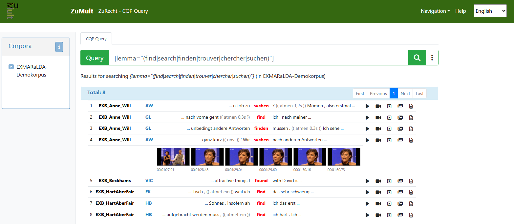

Demo corpus
ISO 24624:2016 Language resource management — Transcription of spoken language
This page is work in progress.
EXMARaLDA Demo Corpus
The Transcription+ project is developing a new version of the EXMARaLDA demo corpus, providing examples of ISO-TEI-Spoken transcriptions with the underlying audio and video recordings in at least eight languages. This new version of the corpus will be made freely available via the repository of the Center for Sustainable Research Data Management at the University of Hamburg.
ZuMult

ZuMult is a platform for accessing audiovisual language corpora, supporting both browsing and querying functionalities. In all existing implementations, the ISO-TEI-Spoken standard serves as the central data format for transcriptions and annotations. ZuMult’s query processor is built on the MTAS search engine, which enables the creation of Apache Lucene indices for ISO-TEI-Spoken transcripts and supports querying via the CQP query language. This capability constitutes a key prerequisite for enabling ZuMult to comply with CLARIN’s Federated Content Search (FCS) protocol. In addition to being deposited in the data repository of the Center for Sustainable Research Data Management at the University of Hamburg, the new version of the EXMARaLDA demo corpus (see above) will be made accessible through a dedicated ZuMult instance. This instance, hosted at the Text+ Centre at the Academy of Sciences and Humanities in Hamburg, will be extended with an FCS-compliant endpoint to support federated search, thereby demonstrating how ISO-TEI-Spoken facilitates the full integration of audiovisual language resources into CLARIN.
For those who are impatient and have a good reason, a preview of the EXMARaLDA demo corpus in the ZuMult platform is available on a temporary server. Please contact me if you are interested.